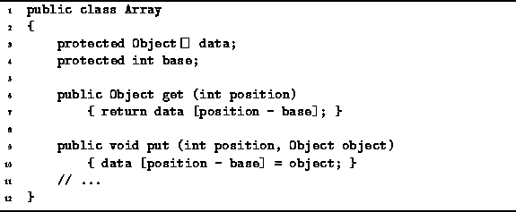

Data Structures and Algorithms
with Object-Oriented Design Patterns in Java
Data Structures and Algorithms
with Object-Oriented Design Patterns in JavaThe elements of a Java array are accessed by enclosing the index expression between brackets [ and ] like this:
a[2] = b[3];When using the Array class, we can access its elements like this:
a.getData()[2] = b.getData()[3];Unfortunately, the syntax in this case is ugly . Unlike C++, in Java there is no way to overload the array subscripting operators. We can, however, define methods for indexing an array like this:
a.put (2, b.get (3));
Program  defines two methods, get and put,
which provide the means to access and modify the array elements.
The get method takes an index
and returns the element found in the array at the given position.
The put method takes an index and an Object
and stores the object in the array at the given position.
defines two methods, get and put,
which provide the means to access and modify the array elements.
The get method takes an index
and returns the element found in the array at the given position.
The put method takes an index and an Object
and stores the object in the array at the given position.

Program: Array class get and put methods.
Both methods translate the given index by subtracting from it the value of the base field. It is in this way that arbitrary subscript ranges are supported. Since the overhead of this subtraction is constant, the running times of get and put are O(1).
 Copyright © 1998 by Bruno R. Preiss, P.Eng. All rights reserved.
Copyright © 1998 by Bruno R. Preiss, P.Eng. All rights reserved.